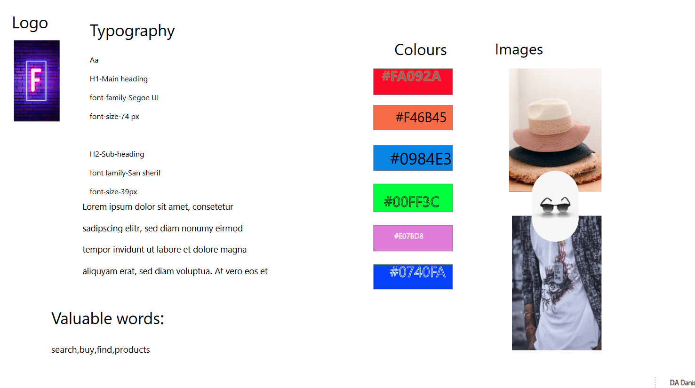

Basic UX

Moodboard
I started looking for inspiration online. I was introduced to Adobe Color, where I could find the color palettes that suited my subject.
Then I collected my ideas in a mood board. After all the inspiration-seeking process, I have chosen to make the website in a modernist style.
The concept is to create a visually light, smooth website with relatively a lot of negative space with small decorative details that do not overload the page.
I have chosen warm brownish and beige colors that go with the subject. To have an idea of the site's design, I had made a mockup in Adobe XD.
Basic UX
Styletile
In order to make the work on the project easier, we have learned to make style tiles, where you collect all fonts, colors, elements on the page, such as buttons, links, logo, etc. In this way, you can always go back to the elements, if you e.g. forget something. It also gives a good overview of the style, color selection and fonts. There are three different fonts, which in my opinion go well with the subject and the style. Header has some soft, round edges, which could be associated with e.g. cappuccino. The sub-header is more square and coarse, like e.g. espresso. In addition, I work in Adobe Illustrator to create logo, favicon.